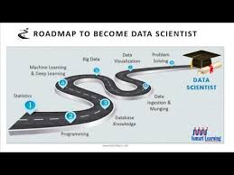

DATABASE

what You know About Database ??
A database is a structured collection of data that is stored and managed electronically, typically in a digital format, allowing for easy access, management, and updating.
It serves as a repository where information is organized and can be retrieved efficiently. Databases are essential components in various fields such as business, finance, healthcare, and technology, as they enable the storage and retrieval of large volumes of data for processing and analysis.
Databases are typically managed by a Database Management System (DBMS), which is software that facilitates the creation, management, and manipulation of databases. A DBMS ensures that data is stored securely, can be accessed concurrently by multiple users, and maintains data integrity through features like backups, transactions, and data consistency checks.
There are various types of databases, with the most common being relational databases and non-relational databases. Relational databases, such as MySQL, PostgreSQL, and Oracle, store data in tables with predefined relationships between them. These databases use Structured Query Language (SQL) to
Relational Databases (RDBMS): These are structured databases that store data in tables with predefined relationships between them. Examples include MySQL, PostgreSQL, Oracle, and Microsoft SQL Server. These databases are known for their consistency and ability to handle complex queries involving multiple tables through joins.
Non-Relational Databases (NoSQL): NoSQL databases are more flexible in terms of data storage and are often used for applications requiring horizontal scalability, unstructured data, or fast read and write operations. Examples include MongoDB, Cassandra, Redis, and CouchDB. NoSQL databases often use key-value pairs, document storage, graph structures, or wide-column stores to manage data.
Object-Oriented Databases: These databases store data in the form of objects, similar to object-oriented programming. They are designed to work well with applications that require complex data structures and relationships. ObjectDB and db4o are examples of object-oriented databases.
Graph Databases: Used primarily for data with interconnected relationships, graph databases excel at storing relationships between entities and are often used in social networking, recommendation engines, and fraud detection. Examples include Neo4j and Amazon Neptune.
In-Memory Databases: These databases store data in the computer's memory (RAM) rather than on traditional storage media, allowing for very fast data retrieval and processing. Examples include Redis and Memcached.
Road Map For Database

NOTES ADDED